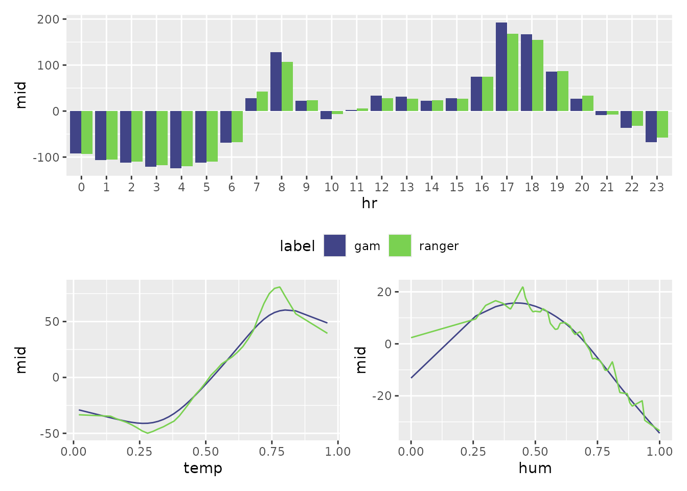
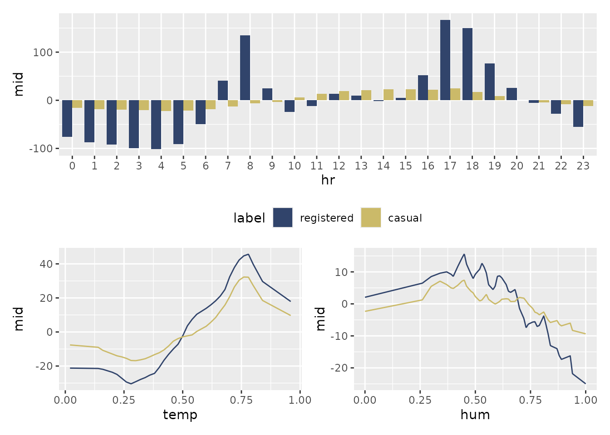

The midr package is designed not only to interpret individual models but also to facilitate comparative analysis. When you are dealing with multiple outcomes or comparing different modeling approaches, midr provides two specialized collection classes: “midlist” and “midrib”.
These collections allow you to visualize and compare feature effects, importance, and instance-level breakdowns across multiple models using a unified interface.
midlist: Flexible Combination of MID Objects
The “midlist” class is a versatile container used to group existing
MID objects (such as mid, midimp,
midbrk, or midcon). This is particularly
useful when you have trained separate models—perhaps using different
algorithms or targeting different subsets of data—and want to compare
their behavior side-by-side.
Example: Comparing GAM vs. Random Forest
When predicting the total number of users (bikers) in
the Bikeshare dataset, different machine learning algorithms capture
non-linear relationships differently. Here, we fit a Generalized
Additive Model (gam) and a Random Forest
(ranger), interpret both of them independently, and
unify the results into a single “midlist” collection for a direct visual
comparison.
library(ggplot2)
library(patchwork)
library(midr)
library(gam)
library(ranger)
data(Bikeshare, package = "ISLR2")
fit.gam <- gam(
bikers ~ mnth + hr + s(weekday) + weathersit + s(temp) + s(hum),
data = Bikeshare
)
fit.ranger <- ranger(
bikers ~ mnth + hr + weekday + weathersit + temp + hum,
data = Bikeshare
)
# Interpret two separate models independently
mid.gam <- interpret(
bikers ~ mnth + hr + weekday + weathersit + temp + hum,
data = Bikeshare,
model = fit.gam,
k = 50
)
mid.ranger <- interpret(
bikers ~ mnth + hr + weekday + weathersit + temp + hum,
data = Bikeshare,
model = fit.ranger,
k = 50,
lambda = 1
)
# Combine them into a midlist
mids <- midlist(
gam = mid.gam,
ranger = mid.ranger
)
class(mids)#> [1] "mids" "midlist"When ggmid() is called on a “midlist” collection, it
automatically handles the comparison.
options(midr.qualitative = "viridis")
p1 <- ggmid(mids, "hr") + theme(legend.position = "bottom")
p2 <- ggmid(mids, "temp") + theme(legend.position = "none")
p3 <- ggmid(mids, "hum") + theme(legend.position = "none")
p1 / (p2 + p3)
Mathematical Note: The “midlist” architecture offers
maximum flexibility. Each model in the collection can maintain its own
unique fitting parameters such as lambda (regularization
strength), k (number of knots), and type
(shape of component functions).
midrib: Efficient Multi-Response MID Model
The “midrib” class is designed for multi-output scenarios, where a single model predicts multiple target variables simultaneously. Instead of interpreting each response in isolation, midr treats the multi-output structure as a single entity—a “midrib” or shared backbone.
You can trigger the creation of a “midrib” object in two ways:
-
via formula: Provide a matrix or data frame as the
response (e.g., using
cbind()). -
via prediction function: Pass a model and a custom
pred.funthat returns a matrix or data frame of predictions.
Example: Joint Interpretation of Registered and Casual Users
Instead of comparing different algorithms, we might want to understand how features simultaneously affect different segments of our target variable. Here, we interpret a single model predicting both “registered” and “casual” users.
# Using a formula with a multi-column response
midrib <- interpret(
cbind(registered, casual) ~ (mnth + hr + workingday + weathersit + temp + hum),
data = Bikeshare,
k = 50,
lambda = 1
)#> 'model' not passed: response variable in 'data' is used
class(midrib)#> [1] "mids" "midrib"The resulting “midrib” object stores the fitted functions (i.e., all coefficients) for all outcomes in a unified structure, allowing for seamless comparative plotting.
options(midr.qualitative = "cividis")
p1 <- ggmid(midrib, "hr") + theme(legend.position = "bottom")
p2 <- ggmid(midrib, "temp") + theme(legend.position = "none")
p3 <- ggmid(midrib, "hum") + theme(legend.position = "none")
p1 / (p2 + p3)
Mathematical Note: By sharing a single design matrix across all responses, the “midrib” class significantly reduces memory consumption and computation time. This makes it the ideal choice for high-dimensional multi-output data.
Summary of Collection Structures
| Class | Data Structure | Optimization Logic | Key Advantage |
|---|---|---|---|
| “midlist” | A list of “mid”, “midimp”, “midbrk”, or “midcon”. | Independent: Each model has its own fitting parameters. | Flexibility: Compare heterogeneous models. |
| “midrib” | A single multivariate response model. | Joint: Shares a single design matrix across all responses. | Efficiency: Significant speedup for multivariate targets. |